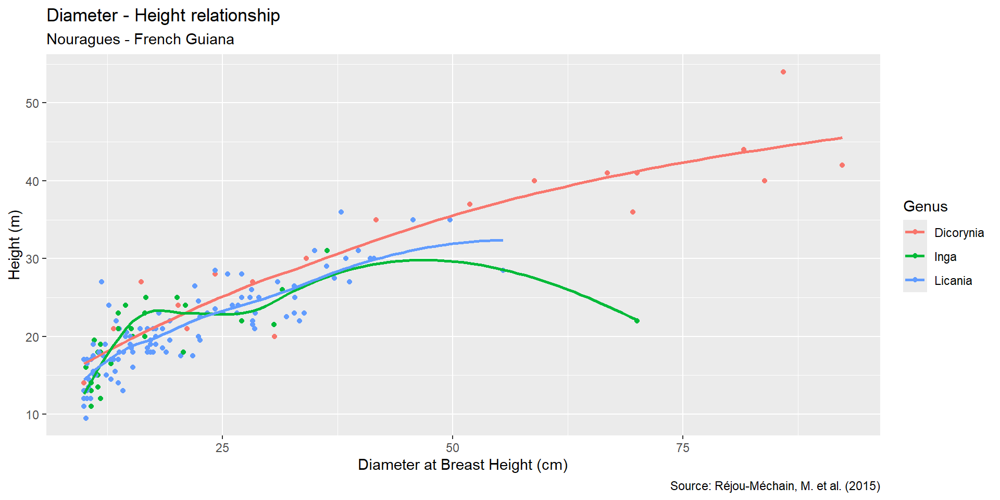

The first step to make a plot with ggplot2 is to specify the data that we use. For that, we use the function ggplot and specify the data in the argument data.
ggplot(data=dt_HD)
This creates an empty plot, as we didn’t say how we want to visualise the data.
Step 2: specify the variables
We use the argument mapping to specify the variables to represent.
We use the function aes, meaning aesthetics, which are the visual properties of the plot.
We want to plot the D on the x-axis and the H on the y-axis.
ggplot(data=dt_HD,mapping =aes(x = D, y = H))
Step 3: specify how we want data to be represented
We still need to define a geom: the geometrical object used to represent the data.For this, we use a function with a name starting by geom_.
We want to represent data with points, we use geom_point .
ggplot(data=dt_HD,mapping =aes(x = D, y = H)) +geom_point()
Warning: Removed 163 rows containing missing values or values outside the scale range
(`geom_point()`).
A more concise synthax
We can simplify the synthax:
data is the first argument
mapping is the second
We don’t need to explicit them.
ggplot(dt_HD,aes(x = D, y = H)) +geom_point()
Adding aesthetics
Let’s differentiate the two plots (parcelas):
using colour:
ggplot(dt_HD,aes(x = D, y = H,color = plotId)) +geom_point()
or using shape:
ggplot(dt_HD,aes(x = D, y = H,shape = plotId)) +geom_point(size =3) # to increase the size of the points
NB: we could also combine colour and shape.
Adding aesthetics
We can also change the size of the points according to a continuous variable (here D):
The arguments color, size, shape, …, can be used as arguments of the function aes or not. But this does not do the same thing.
ggplot(dt_HD,aes(x = D, y = H, color = plotId)) +geom_point()
When in aes, the colour depends on the values of a variable (categorical or numeric).
ggplot(dt_HD,aes(x = D, y = H)) +geom_point(color="red")
When not in aes, the colour is constant.
Adding layers
We can add new layers to a plot using the +
ggplot(dt_HD,aes(x = D, y = H)) +geom_point() +geom_smooth()
geom_smooth adds a trend line in the cloud of points.
Where to specify the aesthetics?
NB: the place where you specify the aesthetics matters!
ggplot(dt_HD,aes(x = D, y = H,color = plotId)) +geom_point() +geom_smooth()
applied to all geometries
ggplot(dt_HD,aes(x = D, y = H)) +geom_point(aes(color = plotId)) +geom_smooth()
applied only to geom_point
Visualising the distribution of a single variable
Distribution of a categorical variable - barplot
We have seen in a previous session that the distribution of a categorical variable can be visualised using a barplot.We use the geometry geom_bar.
ggplot(dt_HD,aes(x = plotId)) +geom_bar()
Distribution of a numerical variable - histogram
We have seen in a previous session that the distribution of a numerical (=quantitative) variable can be visualised using an histogram.We use the geometry geom_histogram.
ggplot(dt_HD,aes(x = D)) +geom_histogram(binwidth =5) # binwidth specify the size of intervals
Distribution of a numerical variable - density plot
We can also use a density plot, which is a smoothed-out version of an histogram.We use the geometry geom_density.
Relationship between a categorical and a numerical variable - density plot
We can also do several density plots with the geometry geom_density.
dt_HD %>%filter(genus %in%c("Dicorynia", "Eperua", "Inga")) %>%ggplot(aes(x = D, color = genus)) +geom_density(linewidth =1) # linewidth to change the width of the lines
Relationship between two categorical variables - stacked barplots
We can see the relationship between two categorical variables using a stacked barplot.We use the geometry geom_bar.
Here we want to see the number of individuals of our three genus, in each plot (genus and plotId are two categorical variables).
Relationship between two categorical variables - stacked barplots
If we use the argument position = “fill”, the barplot represent the proportions and not the counts
dt_HD %>%filter(genus %in%c("Dicorynia", "Eperua", "Inga")) %>%ggplot(aes(x = genus, fill = plotId)) +geom_bar(position ="fill") +coord_flip() +# flip the plotylab("Proportion of the genus in each plot") # change the axis label
Relationship between two categorical variables
We can also display the count per genus and per plotId:
dt_HD %>%filter(genus %in%c("Licania", "Lecythis", "Inga", "Dicorynia", "Eperua")) %>%count(genus, plotId) %>%# number of trees per genus and per plotggplot(aes(x = plotId, y = genus)) +geom_tile(aes(fill = n))
Relationship between two numerical variables
We already saw how to make scatterplots and add trend lines using geom_point and geom_smooth:
ggplot(dt_HD,aes(x = D, y = H)) +geom_point(alpha =0.2) +# alpha controls transparancygeom_smooth(method ="lm", color ="red") +# adds a linear trend linegeom_smooth(method ="loess", color ="blue") # adds a loess trend line
Relationship between two numerical variables
When there are too many points to see them well, we can use geom_bin2d to discretise the two variables and count the number of observations in each bin.
ggplot(dt_HD,aes(x = D, y = H)) +geom_bin2d()
Relationship between two numerical variables
We can also use geom_density2d to add contour lines to show were the points are the more numerous.
ggplot(dt_HD,aes(x = D, y = H)) +geom_point(alpha =0.2) +geom_density2d(color ="red")
Relationship between several variables
We already saw how to use the aesthetics shape, color, size to add categorical and/or numerical variables.
We can also split the plot into facets using facet_wrap:
dt_HD %>%filter(genus %in%c("Dicorynia", "Licania", "Inga")) %>%ggplot(aes(x = D, y = H)) +geom_point(aes(color = plotId)) +facet_wrap(~genus) # one facet per genus
Relationship between several variables
facet_grid allows to create facets using two categorical variables:
dt_HD %>%filter(genus %in%c("Dicorynia", "Licania", "Inga")) %>%ggplot(aes(x = D, y = H)) +geom_point() +facet_grid(plotId ~ genus) # one facet per plotId and per genus
Summary on how to choose a type of plot
Improving the visual appearance of plots
Let’s go back to a plot we already made, put it in an object, and start to improve the visual appearance:
dt_sub <- dt_HD %>%filter(genus %in%c("Dicorynia", "Licania", "Inga"))plot1 <-ggplot(dt_sub, aes(x = D, y = H, color = genus)) +geom_point() +geom_smooth(method ="loess", se =FALSE) # se = FALSE to not display the confidence intervalplot1
Labels
Let’s start by changing the labels to make them more explicit, using the labs function:
plot1 <- plot1 +labs(x ="Diameter at Breast Height (cm)", # x axisy ="Height (m)", # y axiscolor ="Genus", # legend of the aes colortitle ="Diameter - Height relationship",subtitle ="Nouragues - French Guiana",caption ="Source: Réjou-Méchain, M. et al. (2015)" )plot1

Scales
To change the visual appearance of the aesthetics, we can use the scale functions.
There are several scale functions, all with a name that specify the aesthetic and the type of variable they consider (e.g. continuous or discrete):
scale_x_continuous relates to the aesthetic x which is continuous (in our case D)
scale_color_discrete relates to the aesthetic color which is discrete (in our case genus)
Scales - Axis ticks
To change the position of the axis ticks (axis graduation), we use the argument breaks
plot1 <- plot1 +scale_x_continuous(breaks =seq(10, # x-axis ticks from 10max(dt_sub$D), # to the max. value of Dby =10)) # every 10 cmplot1
Scales - Labels
We could also change the keys of the legend using the argument labels